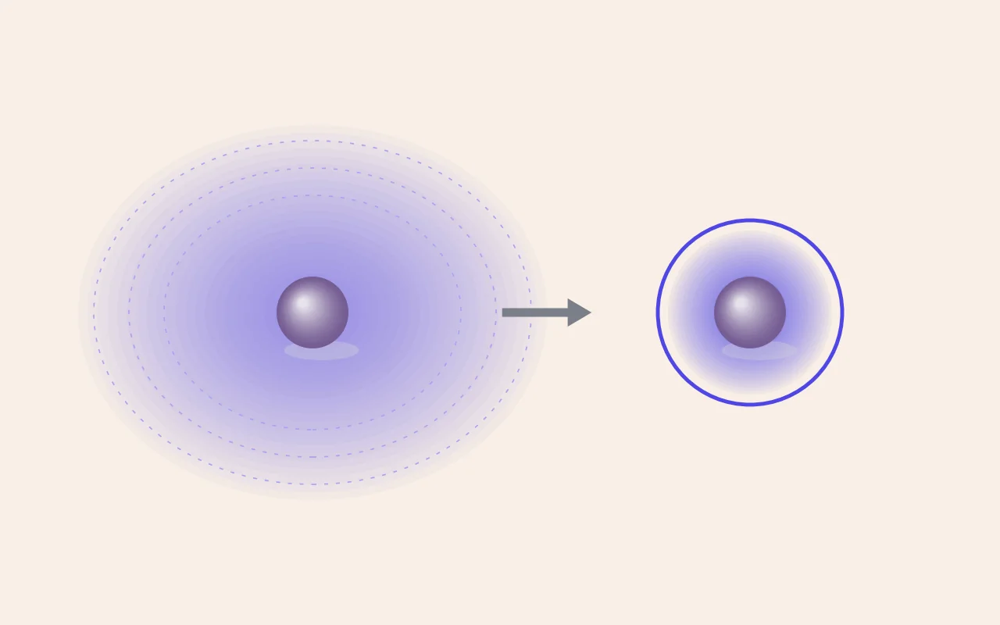

DFT 이론 [3] — GGA는 왜 전압을 1 V씩 틀리는가: +U 보정의 논리
표준 DFT(GGA)로 배터리 양극재의 전압을 계산하면 실험보다 0.5~1 V씩 낮게 나옵니다. 무작위로 틀리는 게 아니라 늘 같은 방향으로 틀립니다. 이 오차가 어디서 오는지, 어떻게 고치는지를 다룬 고전 논문을 공부하면서 정리한 노트입니다. 다음 실습에서 INCAR에 넣을 숫자 하나(U = 3.9 eV)가 어디서 왔는지도 여기서 나옵니다.

공부한 논문. L. Wang, T. Maxisch & G. Ceder, "Oxidation energies of transition metal oxides within the GGA+U framework", Phys. Rev. B 73, 195107 (2006). doi:10.1103/PhysRevB.73.195107. 배터리 계산에서 쓰는 U 값의 표준 출처이고, Materials Project의 U 설정도 이 논문을 따릅니다. 논문 리뷰는 따로 쓰고, 여기서는 이론의 뼈대만 정리합니다.
문제 설정, 산화 반응은 DFT에게 왜 가혹한 시험인가
배터리의 충방전은 화학적으로 보면 산화·환원 반응입니다. 예를 들어 망간 산화물이 산소를 얻어 더 높은 산화 상태로 가는 반응(MnO → Mn₂O₃ → MnO₂ 계열)의 에너지를 정확히 계산할 수 있어야, Na나 Li을 넣고 뺄 때의 전압도 정확히 나옵니다. 그런데 이런 반응에는 DFT가 가장 어려워하는 과정이 들어 있습니다. 전자가 성격이 전혀 다른 두 오비탈 사이를 옮겨 간다는 점입니다. 금속의 좁고 국재화된 d 오비탈과 산소의 비교적 퍼진 2p 오비탈 사이를요.
범인 1 · 자기상호작용 오차(SIE)는 국재화를 차별한다
이론 [1]에서 다뤘듯이, DFT의 근사 범함수에는 전자가 자기 자신과 상호작용하는 가짜 반발(self-interaction error)이 남아 있습니다. 문제는 이 오차가 전자마다 똑같지 않다는 겁니다. 퍼져 있는 전자에서는 작고, 좁은 공간에 갇힌 전자(전이금속 d)에서는 큽니다. 그래서 GGA는 전자가 국재화된 상태를 실제보다 불리하게 계산하고, 전자를 실제보다 퍼뜨리는 쪽으로 답을 냅니다.
이걸 산화 반응에 대입하면 오차의 방향이 설명됩니다. 산화가 진행될수록 금속의 d 전자 수가 줄고 남은 전자는 더 국재화되는데, GGA는 이 상태를 실제보다 불리하게 봅니다. 그래서 산화로 얻는 에너지 이득(산화 엔탈피의 크기)이 늘 작게 계산되고, 전압은 바로 이 에너지 차이에서 나오니 항상 낮은 쪽으로 틀립니다. 오차가 한 방향인 이유가 이것입니다.
범인 2 · O₂ 분자라는 별개의 오차
이 논문에서 중요하게 정리한 건 오차가 실은 두 종류이고, 따로 고쳐야 한다는 점입니다. 산화 반응식의 반대편에는 기체 O₂가 있는데, GGA는 O₂ 분자의 결합 에너지 자체를 꽤 틀리게(너무 강하게) 계산합니다. 이건 d 전자와 상관없는 분자 쪽 오차입니다. 저자들은 O₂ 에너지에 일정한 보정값(O₂당 약 1.36 eV)을 더하는 방식으로 이 오차를 따로 처리했습니다. 두 오차를 합쳐서 U 하나로 맞춰 버리면 U가 "d 전자 보정"이라는 물리적 의미를 잃고 아무 데나 맞추는 피팅 변수가 돼 버리기 때문입니다. 오차마다 따로 보정을 준 점이 이 논문의 방법에서 좋았던 부분입니다.
처방, U라는 페널티의 작동 원리
DFT+U는 d 오비탈에만 규칙을 하나 더합니다. 쉽게 말하면 "d 오비탈은 어중간하게 차 있지 말고, 확실히 차 있거나(1) 확실히 비어 있어라(0)"입니다. 수식으로는 점유수가 0이나 1에서 벗어난 만큼 에너지 벌점을 주는 항을 더하는 것이고, 벌점의 세기가 U(정확히는 U_eff = U − J, VASP의 Dudarev 방식)입니다. 이 벌점이 SIE 때문에 생긴, 전자가 퍼지는 쪽을 선호하는 경향을 상쇄해서 전자를 국재화된 정수 점유 쪽으로 돌려놓습니다. 그러면 Mn³⁺과 Mn⁴⁺가 더 뚜렷하게 구분되고, 이론 [2]에서 쓴 "자기모멘트로 산화수 읽기"도 더 깔끔해집니다.
그러면 U는 어떻게 정하나, 제1원리의 우아한 타협
제가 가장 궁금했던 건 U를 어떻게 정하느냐였습니다. U는 물리 상수가 아니라서 이론만으로는 정해지지 않습니다. 이 논문은 실험으로 잘 측정된 이원계 산화물의 산화 엔탈피(예: MnO가 MnO₂ 계열로 산화될 때의 반응열)를 재현하도록 금속마다 U를 피팅했습니다. 순서가 중요합니다. 먼저 O₂ 보정으로 분자 쪽 오차를 없앤 다음, 남은 오차를 U로 맞춥니다. 이렇게 얻은 망간의 값이 U ≈ 3.9 eV이고, 이 숫자가 다음 실습의 INCAR(LDAUU 태그)에 들어갑니다. 남들이 3.9를 써서가 아니라, 이 피팅 절차가 출처입니다.
실험값에 피팅하면 제1원리가 아니지 않냐는 의문이 당연히 듭니다. 저자들의 입장은 실용적인 타협입니다. 이원계 산화물 몇 개의 반응열이라는 최소한의 실험 정보로 U를 정해 두고, 그 U로 아직 측정되지 않은 수많은 화합물(삼원계 양극재, 새 조성)을 예측하자는 겁니다. 넣는 정보는 적고 얻는 예측은 많으니 해 볼 만한 거래입니다. 고엔트로피 조성처럼 실험 데이터가 없는 물질을 스크리닝하려는 제 연구도 이 타협을 그대로 전제로 깔고 있습니다.
U가 고치는 것, 고치지 못하는 것
- 좋아지는 것: 산화 에너지가 실험과 정량적으로 맞기 시작해서 전압 예측이 쓸 만해집니다. 실제로는 절연체인데 GGA가 금속으로 잘못 예측하던 바닥상태도 상당 부분 바로잡힙니다.
- 남는 문제 1 · U는 하나인데 상태는 여럿: 가장 알맞은 U는 원소뿐 아니라 산화 상태와 배위 환경에 따라서도 달라지는데, 계산 하나에는 원소마다 U를 하나만 걸 수 있습니다. 그래서 Mn³⁺와 Mn⁴⁺를 오가는 충방전 계산에는 계통 오차가 남습니다.
- 남는 문제 2 · 에너지끼리 호환이 안 됨: GGA로 계산한 에너지와 GGA+U로 계산한 에너지는 기준이 달라서 바로 비교할 수 없습니다. 수준이 다른 계산을 섞어 상평형(convex hull)을 그리려면 따로 호환 보정을 해야 합니다. Materials Project가 하는 게 이 작업입니다.
- 남는 문제 3 · 금속에는 걸면 안 됨: U는 국재화된 전자를 위한 보정입니다. 전자가 원래 퍼져 있는 금속상(예: 금속 Na)에 걸면 오히려 틀어집니다. 그래서 전압 계산에서 산화물 쪽만 +U, 금속 전극 쪽은 GGA로 계산하는 비대칭이 생기고, 이게 문제 2와 엮입니다.
요약. GGA의 전압 오차는 무작위 잡음이 아니라, 국재화된 d 전자를 불리하게 계산하는 자기상호작용 오차(그리고 O₂ 분자의 별도 오차)가 만드는 계통 편향입니다. 보정은 두 갈래입니다. O₂에는 상수 보정을, d 전자에는 정수 점유를 선호하게 하는 벌점 U를 줍니다. U는 이원계 산화물의 실험 산화 엔탈피에 맞춰 피팅하고, Mn은 약 3.9 eV입니다. 이걸로 전압 예측은 쓸 만해지지만, U를 다른 상태에 그대로 옮겨 쓰기 어렵다는 점, 에너지 호환성, 금속에는 쓸 수 없다는 점, 세 가지 문제가 남습니다. 이 문제들을 어떻게 피해 가도록 설계하느냐가 계산 연구의 방법론입니다.
다음 실습에서 이 이론을 확인해 봅니다. 같은 NaMnO₂에 U=3.9를 걸었을 때와 안 걸었을 때, 그리고 사다리 3단(r2SCAN)으로 올라갔을 때 전압과 자기모멘트가 어떻게 달라지는지 직접 비교할 생각입니다. 이 글은 그 계산 전에 써 둔 가설 노트입니다.

Seok
연구하면서 개발합니다. 배터리 재료를 원자 단위에서 계산하는 법을 바닥부터 배우는 중입니다. → 연구 · DFT 글 더 보기